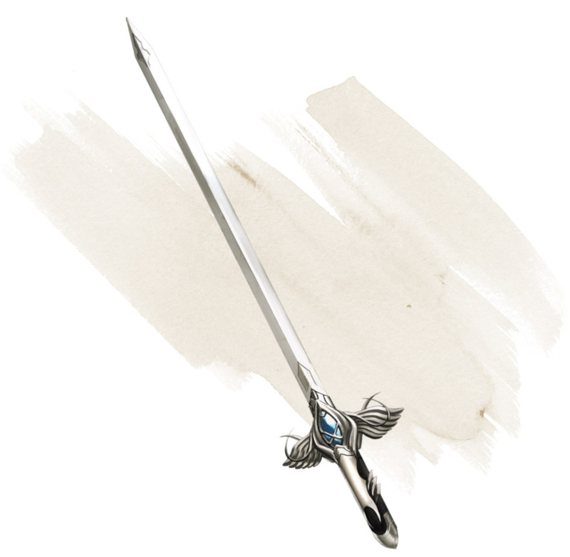

Dancing Sword
[ Épée dansante ]
Weapon (any sword), very rare (requires attunement)
You can use a bonus action to toss this magic sword into the air and speak the command word. When you do so, the sword begins to hover, flies up to 30 feet, and attacks one creature of your choice within 5 feet of it. The sword uses your attack roll and ability score modifier to damage rolls.
While the sword hovers, you can use a bonus action to cause it to fly up to 30 feet to another spot within 30 feet of you. As part of the same bonus action, you can cause the sword to attack one creature within 5 feet of it.
After the hovering sword attacks for the fourth time, it flies up to 30 feet and tries to return to your hand. If you have no hand free, it falls to the ground at your feet. If the sword has no unobstructed path to you, it moves as close to you as it can and then falls to the ground. It also ceases to hover if you grasp it or move more than 30 feet away from it.
While the sword hovers, you can use a bonus action to cause it to fly up to 30 feet to another spot within 30 feet of you. As part of the same bonus action, you can cause the sword to attack one creature within 5 feet of it.
After the hovering sword attacks for the fourth time, it flies up to 30 feet and tries to return to your hand. If you have no hand free, it falls to the ground at your feet. If the sword has no unobstructed path to you, it moves as close to you as it can and then falls to the ground. It also ceases to hover if you grasp it or move more than 30 feet away from it.
Dungeon Master´s Guide (SRD)
